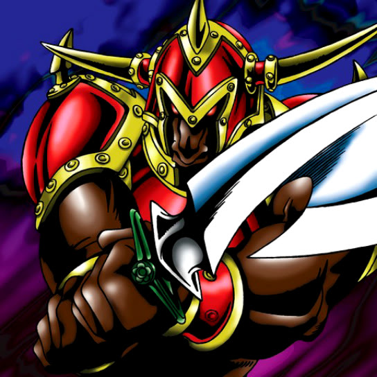

Battle Ox

STATS
ATK: 1700
DEF: 1000DECK COST
Deck Cost per Card: 27Fusion List (4 Possible Fusions)
- Battle Ox + Ancient Elf = Nekogal #2
- Battle Ox + Beautiful Headhuntress = Empress Judge
- Battle Ox + Dragon Statue = Baby Dragon
- Battle Ox + Mystic Horseman = Rabid Horseman